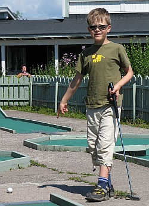
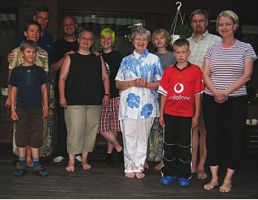
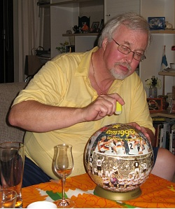
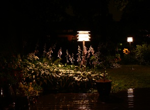
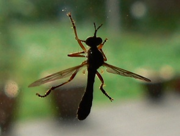

Heinäkuu 2007 |
KesälomaKesälomaa pidimme Mirjan kanssa limittäin, jotta Samin ei olisi tarvinnut olla niin pitkään iltapäiväkerhossa. Loman alussa teimme Samin kanssa bussi-juna -kiertoajelun. Matkustimme bussilla ja kahdella junalla Taliin, jossa kävin hakemassa uuden henkilökortin. Kävimme Elisan ruokalassa lounaalla ja palasimme sitten Jokeri-bussilla ja junalla takaisin kotiin. Olimme myös Heurekassa. Tutustuimme, miten ihminen on kopioinut luonnosta erilaisia rakenteita ja mekanismeja ja toimintatapoja. Jännittävin juttu oli "Ötökät" -elokuva, jonka katsoimme Verne-teatterissa. Linja-auton kokoiset rukoilijasirkat ja tuhatjalkaiset olivat aika hurjan näköisiä. Mirjan loma alkoi kuun puolivälissä. Yhteisen loman alkua juhlistimme miehissä leivotulla mansikkakakulla ja kuohuviinillä. Kesään kuului tietysti myös golf, niin oikea golf kuin mini-golfkin, sekä pyöräily. Mirja ja Sami kävivät terassikierroksella nauttimassa jäätelöä Kaivopuistossa ja neulamuikkuja Kauppatorilla. Vierailimme myös Sainioilla iltapäiväkahvin merkeissä. Amerikan sukulaisetMonen vuoden jälkeen meillä oli ilo tavata Brownin perhe täällä Suomessa. Tiina ja Alexa olivat vierailulla 1999, kun Sami oli vasta syntynyt (ks. vuoden 1999 sivut). Daven olin tavannut edellisen kerran muistaakseni vuonna 1984. He eivät kuitenkaan olleet muuttuneet vuosien kuluessa juuri lainkaan. Viikon ohjelma oli heillä varsin tiukka. Päivisin piti katsella nähtävyyksiä ja iltaisin vierailla sukulaisten luona. Torstai-iltana porukka oli lettukesteillä meidän luonamme. Sää oli suosiollinen ja paistelimme ison läjän muurinpohjalettuja. Niitä nautiskeltiin mansikoiden, jäätelön ja vaahterasiirapin kera. Tästä voit katsella kuvia Brownien vierailusta ja muutenkin heinäkuulta. RapujuhlatMeidät oli jälleen kutsuttu Weguille nauttimaan kirkkaan punaisista saksiniekoista ja monista muista herkullisista pöydän antimista. Iltaan sisältyi myös pientä askartelua. Rakensimme porukalla loppuun Markuksen lahjaksi saaman kolmiulotteisen jalkapallopalapelin. Koossa pysymisen varmistamiseksi tarvittiin vähän heftaa ja viimeistely tehtiin varovasti pyyhekumilla naputtelemalla. Lopputulos ei ollut lainkaan hassumman näköinen. |
Kuukauden sääHeinäkuun sää oli sopivan vaihteleva. Aurinkoa, kohtuullista lämpöä ja sadettakin välillä. Loppukuu oli hiukan epävakaisempi ja viileähkö. Kuukauden ajatusKauniit ihmiset ovat yleensä ikäisensä näköisiä Uutislehti 100:n päätoimittaja Kuukauden kuvaItikka Heinäkuun kuvia |